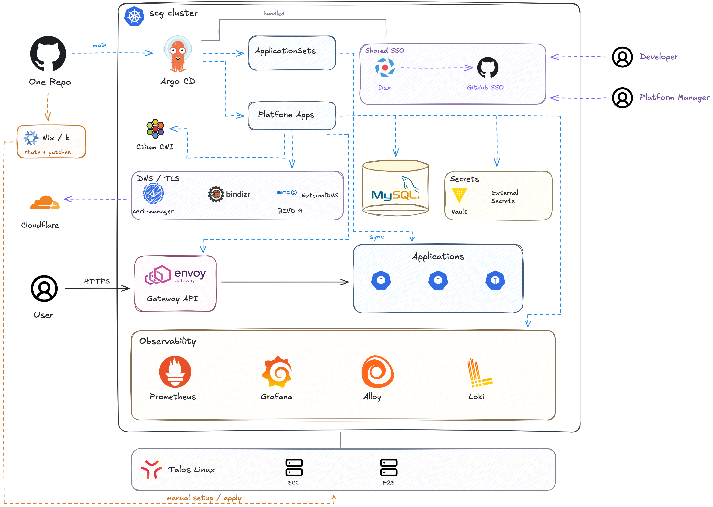

프로젝트 소개
성균관대학교 시스템컨설턴트그룹의 온프레미스 Kubernetes 클러스터를 관리하는 저장소입니다. 클러스터는 Talos Linux를 기반으로 하며, 플랫폼 설치와 애플리케이션 배포에 필요한 설정을 Git에서 관리합니다. Argo CD가 이 설정을 읽어 클러스터에 반영합니다.
아키텍처

주요 작업
초기 GitOps 구조를 설계한 뒤, 클러스터 상태와 애플리케이션 로그를 확인할 수 있도록 모니터링과 로그 수집을 추가했습니다. 여러 서비스에서 사용할 Gateway와 IP 접근 제어도 함께 작업했습니다.
meta.yaml과 ApplicationSet을 이용한 GitOps 구조 설계- 공통 Gateway와 cert-manager 인증서 설정
- Prometheus와 Grafana를 이용한 클러스터 모니터링
- Alloy, Loki, Grafana를 연동한 애플리케이션 로그 수집과 조회
- 공통 Helm 차트에 CIDR 기반 IP 접근 제어와 배포 전 검증 추가
구현 과정
meta.yaml로 플랫폼 컴포넌트 등록
초기 구조에서는 각 플랫폼 컴포넌트에 meta.yaml을 두었습니다. ApplicationSet이 platform/*/meta.yaml을 읽어 Argo CD Application을 생성하고, 새 컴포넌트도 같은 방식으로 등록하도록 했습니다.
Kustomize로 관리하는 설정과 Helm 차트를 모두 등록할 수 있게 했습니다. Helm 차트는 저장소의 values 파일과 추가 매니페스트를 함께 적용할 수 있도록 했습니다.
AppProject와 ApplicationSet은 클러스터 루트에 모아두고, 생성된 Application에는 auto-sync, pruning, self-healing을 적용했습니다. Git에서 삭제한 리소스는 클러스터에서도 삭제하고, 클러스터에서 직접 수정한 설정은 Git에 저장된 상태로 되돌리도록 했습니다.
공통 Gateway와 HTTPS 설정
외부 요청을 Cilium Gateway에서 받도록 설정했습니다. HTTPS 리스너와 함께 cert-manager의 ClusterIssuer, Certificate 리소스도 Git에서 관리했습니다.
각 서비스의 Route는 공통 Gateway에 연결합니다. Route 연결을 허용할 네임스페이스는 라벨로 구분했습니다.
노드 모니터링과 Grafana 로그인 연동
kube-prometheus-stack을 Argo CD에 등록해 노드와 워크로드의 메트릭을 수집했습니다. Talos 환경에서 수집 가능한 메트릭에 맞춰 수집 대상과 alert rule을 조정했습니다. Grafana에는 CPU와 메모리 사용량, 네트워크와 디스크 상태를 한곳에서 볼 수 있는 대시보드를 만들었습니다.
Grafana는 Dex와 연동해 GitHub 계정으로 로그인하도록 했습니다. GitHub의 platform 팀원에게는 Admin, active 팀원에게는 Viewer 권한을 부여했습니다. 대시보드는 JSON 파일로 Git에서 관리하고, Grafana에서는 읽기 전용으로 제공했습니다.
Pod 라벨을 기준으로 로그 수집
각 노드에서 Alloy가 Pod 로그를 수집해 Loki로 보내고, Grafana에서 조회하도록 연결했습니다. 메트릭과 로그는 Grafana에서 함께 확인하되, Loki와 Alloy는 모니터링과 별도의 Argo CD Application으로 관리했습니다.
로그 수집 대상은 앱 이름과 실행 환경을 나타내는 Pod 라벨로 구분했습니다. 공통 Helm 차트는 이 라벨을 기본으로 붙이고, Kustomize로 배포하는 앱은 Pod 템플릿에 같은 라벨을 추가하면 됩니다.
수집한 로그는 앱과 실행 환경뿐 아니라 워크로드, Pod, 컨테이너별로 검색할 수 있도록 라벨을 정리했습니다. 로그 보관 기간과 저장 공간도 설정하고, Alloy의 RBAC와 Loki 접근 정책을 함께 관리했습니다.
Helm 차트에 IP 접근 제어와 설정 검증 추가
운영 서비스에 접근할 수 있는 IP 대역을 제한하기 위해 공통 Helm 차트에 allowCIDRs를 추가했습니다. 허용할 대역을 적으면 차트가 HTTPRoute의 라우팅 규칙에 맞는 Envoy SecurityPolicy를 생성합니다.
하나의 라우팅 규칙에 여러 백엔드나 트래픽 미러링 대상이 연결되면, 허용 IP 목록이 서로 같은지 검사합니다. 정책을 적용할 규칙 이름이 중복될 때도 차트 렌더링을 중단해 충돌하는 설정이 배포되지 않도록 했습니다.
모니터링과 로그 수집 설정에도 배포 전 검증을 추가했습니다. Helm 차트를 렌더링한 결과에서 수집 대상, 로그 보관 설정, Grafana 권한 매핑을 확인합니다. Prometheus나 Loki처럼 내부에서만 사용하는 서비스가 외부에 노출되지 않는지도 검사합니다.